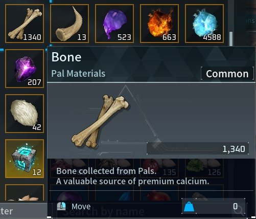
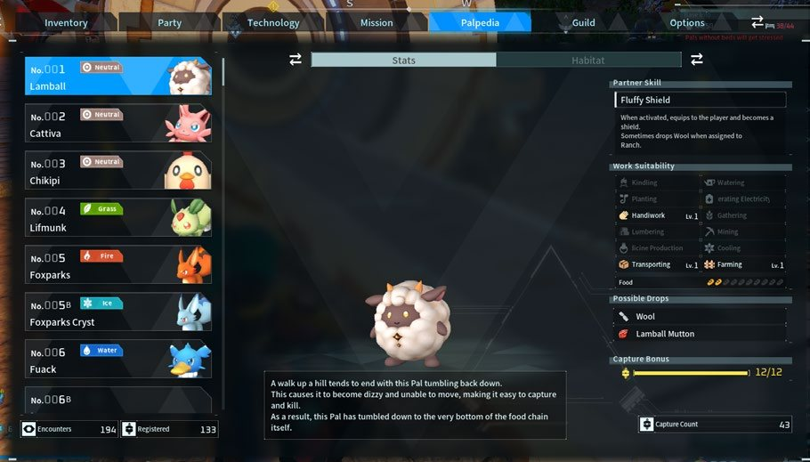
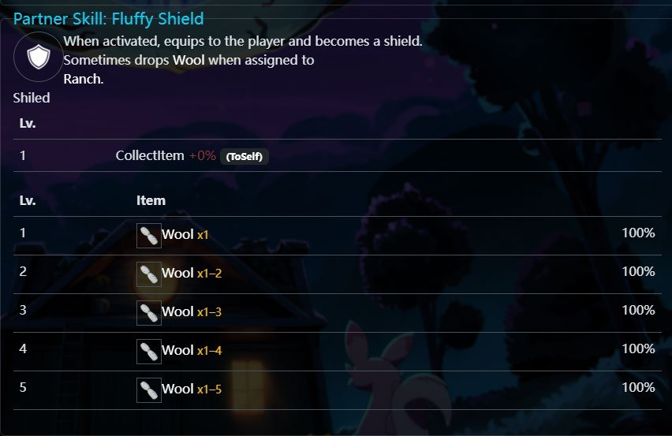
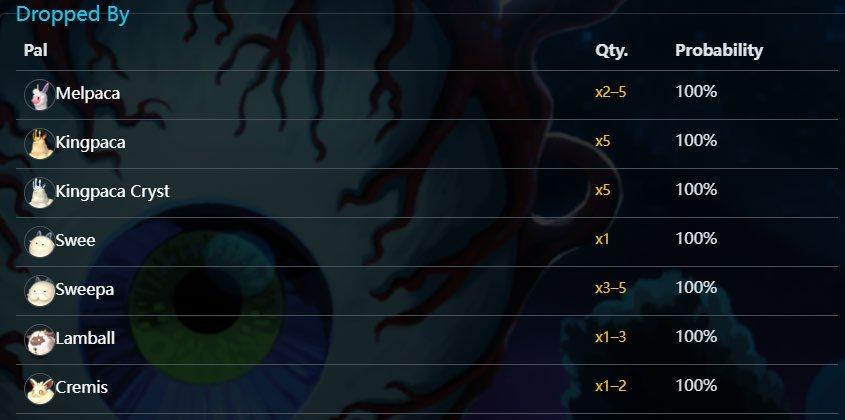
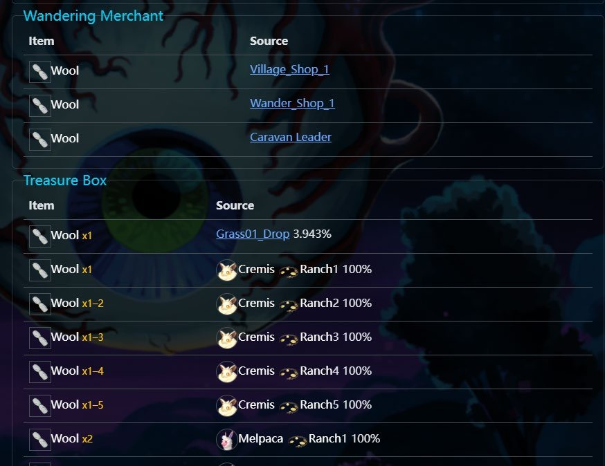
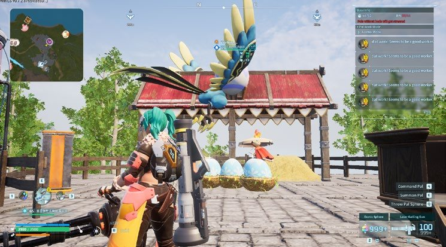
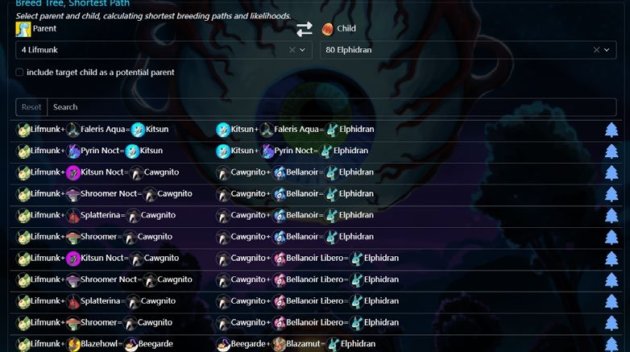
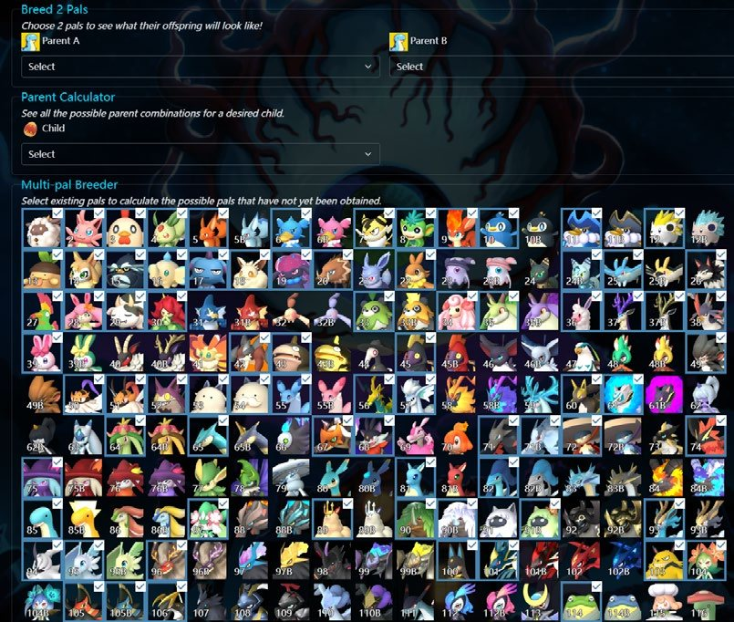

System Analysis · Individual course assignment
When players shift from exploring to planning, the game's information design doesn't shift with them.
Palworld is a survival crafting game where you capture and manage creature companions called Pals. PalDB (paldb.cc) is a fan-made database that collects nearly every data point in the game, such as stats, drop rates, breeding results and spawn maps.
This journal compares the information the game provides with the information the community database provides, through two systems: item drops and breeding.
Opening the inventory and hovering over an item shows the item name, a category label, a one-line description and the current stack count. There is no information about sources or drop rates of any kind.

The Paldeck does slightly more. Lamball's entry includes a Possible Drops section on the right side, listing Wool and Lamball Mutton. But no probabilities are given, no conditions, and no distinction between combat drops and ranch output. A player cannot tell whether the drop chance is 0.1% or 90%. There is also no way to filter Pals by what they drop, because the lookup only works in one direction. The information exists, but it is kept deliberately vague.

On the Pal side, PalDB splits Lamball's drop data into two sections. The Partner Skill section covers ranch output: Lamball always produces Wool when assigned to a ranch, with quantity scaling linearly by level and a consistent 100% rate. The Possible Drops section covers combat: Wool ×1–3 and Lamball Mutton ×1, both at 100%.

On the item side, PalDB offers a reverse lookup. The Wool page lists every source grouped by type. The Dropped By section lists all 7 wild Pals that drop Wool, with quantity ranges and probabilities per row. The Wandering Merchant section lists three merchant sources. The Treasure Box section shows both chest drop rates and ranch output rates. However, these two sources are quite different in practice: chest drops are random and unreliable, while ranch output is consistent and predictable. Grouping them together makes the section harder to read.


For item drops specifically, the in-game information is largely useless to me in practice. I never read item descriptions; the icons are clear enough. And I rarely check the Paldeck's Possible Drops section, because when I need drop information, I already know what item I'm missing. What I need is a source, not a confirmation. Looking up Pals one by one in the Paldeck is slow, and it fails entirely if I haven't unlocked a Pal's entry yet.
In those moments I go straight to PalDB. It tells me the fastest way to get a specific material and gives me enough data to plan around it, including targeted breeding if I want a reliable supply.
On hiding drop rates: most games do this, and I think it works well early on. Not knowing what drops from what makes the early game feel exploratory: you try things, you catch Pals, you experiment. But Palworld is a resource management game, and by the mid-to-late game most players will eventually need this data to reduce friction. At that point, keeping it hidden only pushes them to a third-party site. I think it would be better to surface this information in the game at a certain stage, so players can stay in the game rather than tab out.
Palworld's breeding system is complex, but the in-game explanation is minimal. Players unlock the Breeding Farm at Technology Level 19, build it, place two Pals and a Cake inside, and wait. The game never tells you what offspring a pairing will produce, and there are no in-game tools to help plan a breeding chain. The only things a player can figure out through play are that the same pair always produces the same offspring, and that two identical Pals breed true.

IV values and passive skill inheritance are also hidden. The only thing players can observe on their own is that passive skills can be inherited by offspring, with some element of chance.
The breeding calculator is probably the most-used feature across Pal database sites. In PalDB, players select any two Pals from a dropdown and the calculator instantly returns the guaranteed offspring. It also supports reverse lookup: a player who wants a Suzaku can enter Suzaku as the target and get every valid parent combination. A third mode lets you pick one parent and one target offspring, and returns the shortest breeding path between them. PalDB also has a feature not found on other sites: you can input your current Pal collection and it calculates every new species you can breed from what you already own, which is useful for completing the Paldeck.


One gap worth noting: the site does not explain IV values or passive skill inheritance rules.
The breeding system gives players no way to understand the numbers behind it. PalDB's calculator turns it into something players can actually plan around. Pal breeding, which many consider one of the most unique and enjoyable parts of the game, is only accessible as a real system because of this community tool: the community provided the rules and the routes. Without it, players are left with a black box. The developers built an interesting system but handed off the part that makes it playable to the community.
That handoff carries a real risk. After major updates, breeding data can become outdated, and the whole system becomes harder to use until the site catches up. The gap also splits the player base: players who find external resources can engage fully with breeding, while players who don't are just waiting for eggs with no understanding of what they'll get. The same system delivers a completely different experience depending on whether a player knows PalDB exists.
Both cases point to the same problem: Palworld's information design is built around discovery, but it is also a heavy resource management game. When players shift from exploring to planning, the game doesn't shift with them. Both cases suggest three directions for improvement:
Screenshots are from Palworld and PalDB (paldb.cc) and are used for design analysis only.